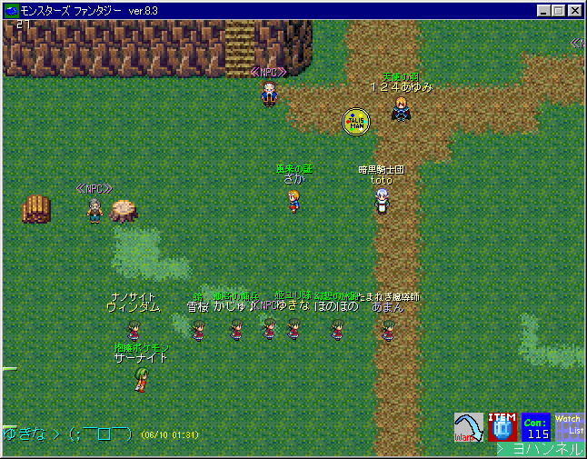
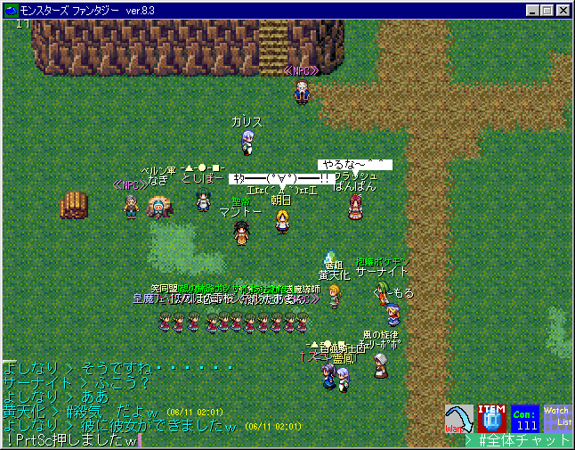
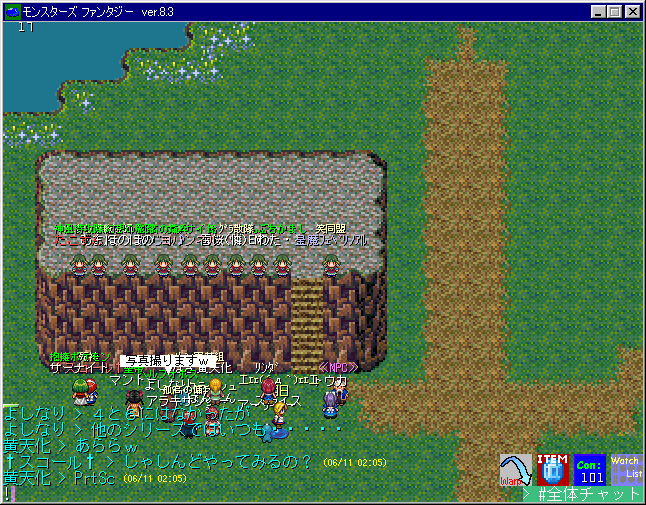
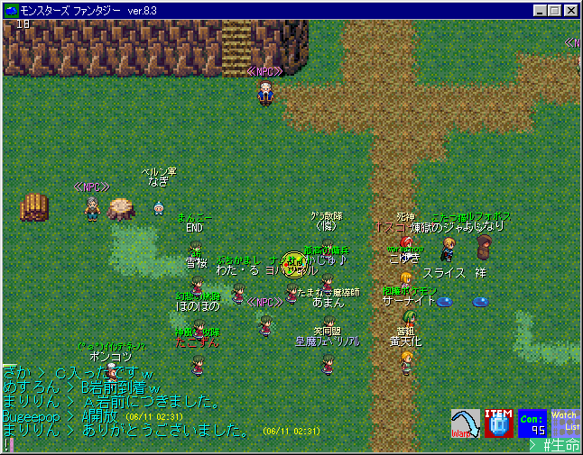

おまめ祭り 2004/6/10～2004/6/11
|
おまめちゃんとは、下の画像で沢山集まっている緑髪の女の子の通称です。 (僕が勝手に命名して広まってるだけだけど、豆つぶみたいに可愛いから) 2日目は打ち合わせで集まった人達に通りすがりの人も加わって 10人も集まりました。それにしてもやっぱ愛くるしいアイコンですねｗ 最後には“おまめが接続人数の1割を越えた”記録も誕生（ぉ |
|  |
| 初日の画像です。皆さん可愛いですｗ(ウィンダムは合成) |
|  |
| 2日目です。初日に集まった人達で打ち合わせをして集まりましたｗ |
|  |
| トリビアにわざわざ着替えに行ってくれた人もいたんですよｗ |
|  |
| 最後にギャラリーの方々も混ぜてMFと書きました。 |
| ｢NANOCITES｣ Web Master:ヨハンソン |